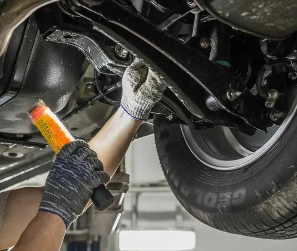
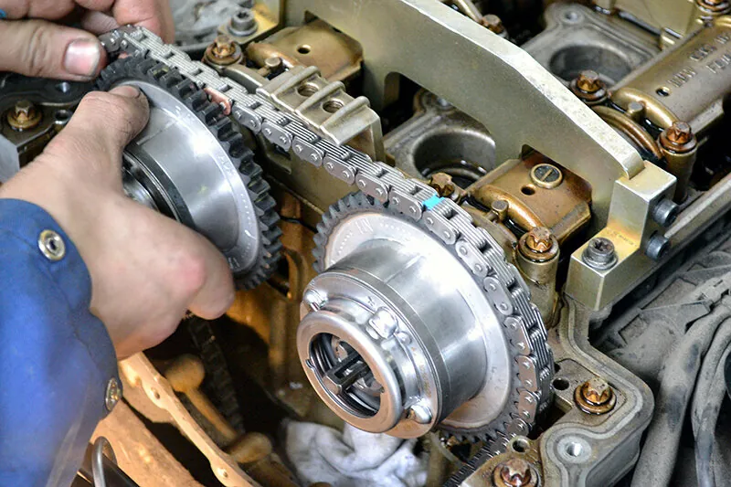
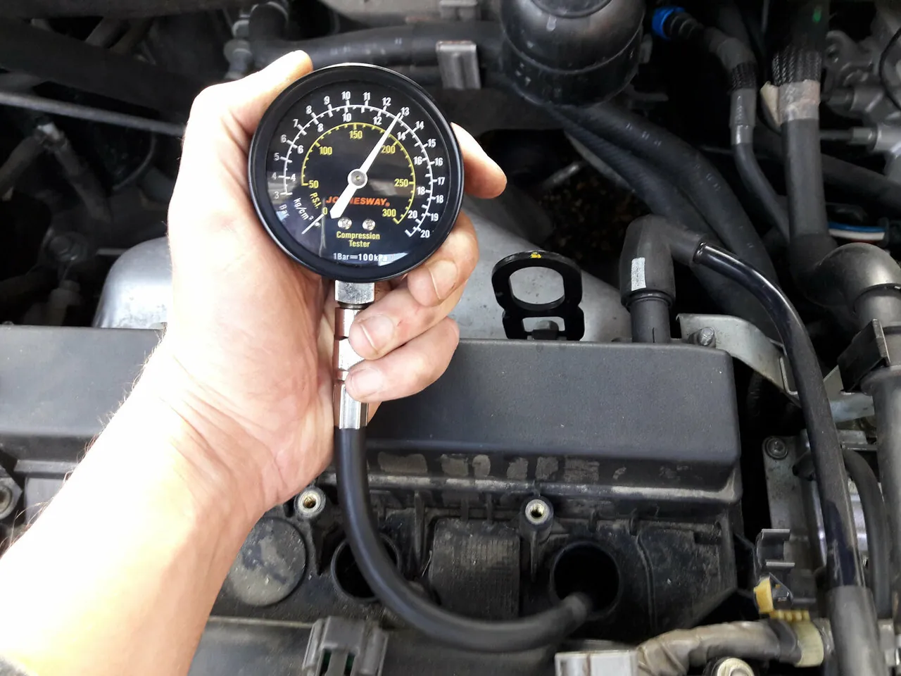
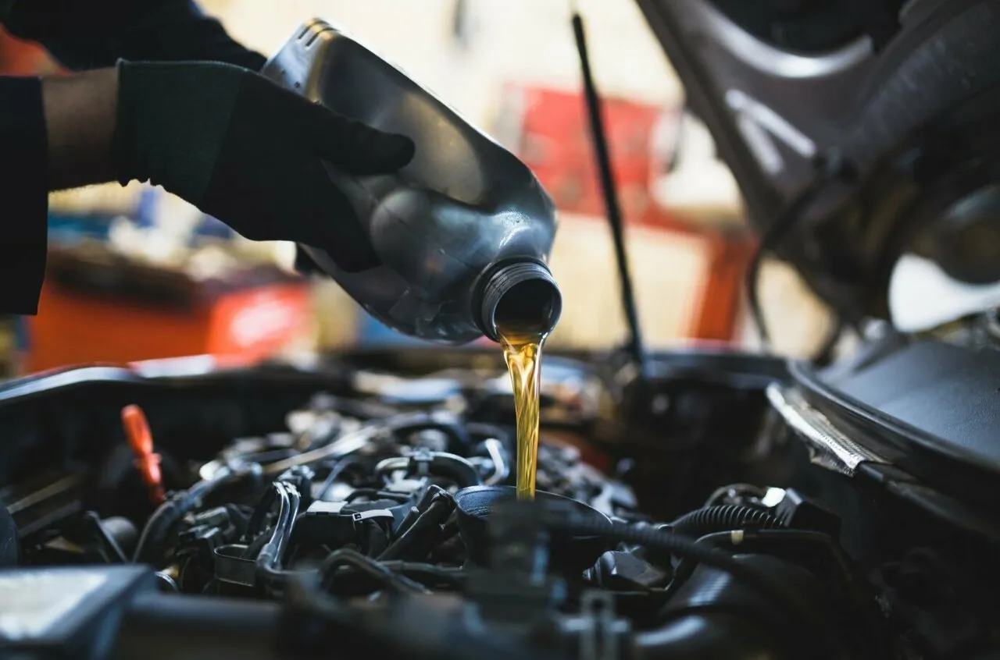
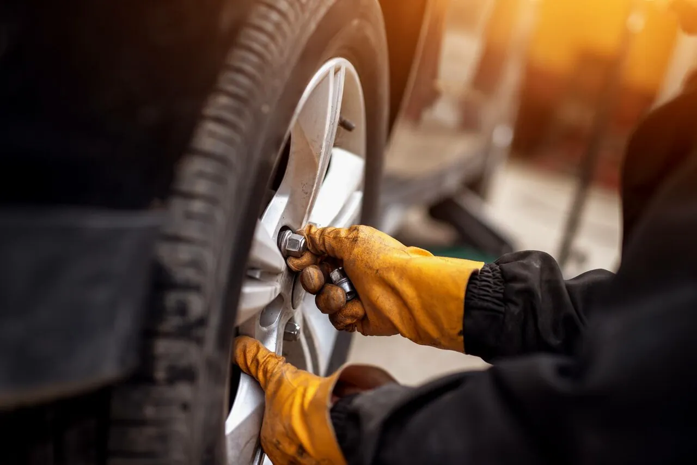
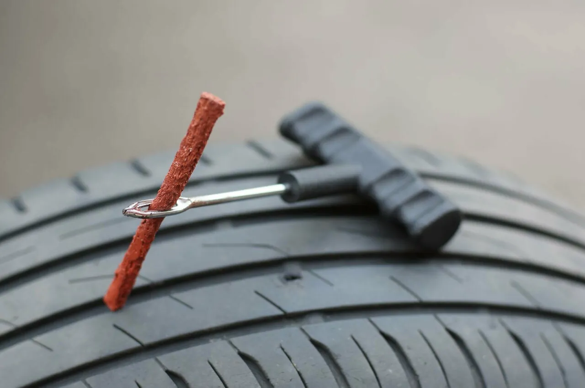
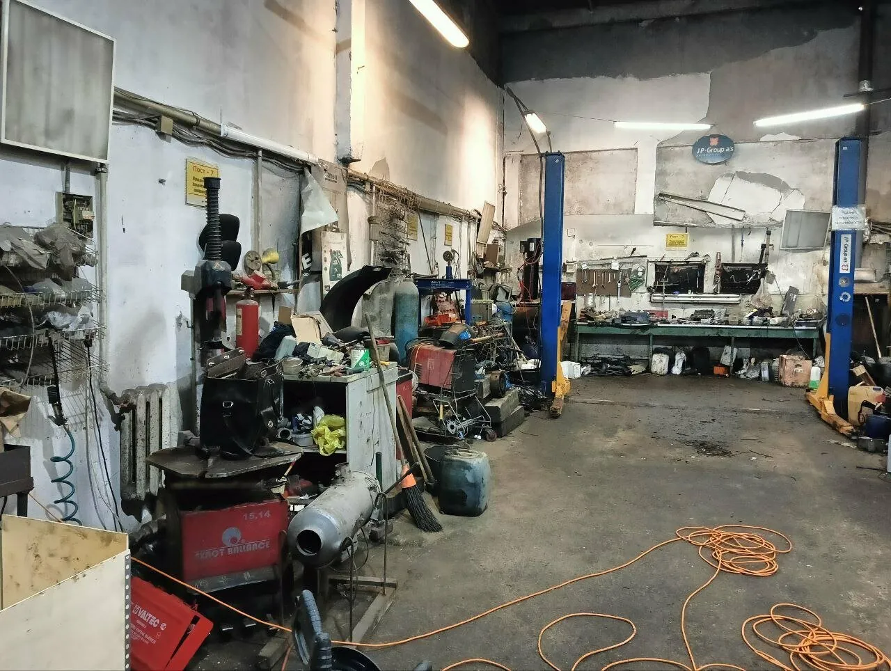

Я - не продвинутый автолюбитель, поэтому когда столкнулась с проблемой, начала искать подходящий автосервис. Понравилось, что я договаривалась не напрямую с мастерами, а все координировала администратор от записи на компьютерную диагностику до закупки запчастей и дальнейший ремонт. Все четко, прозрачно. Ребята-мастера вежливые, все объяснили, даже фото неисправностей прислали. Спасибо большое за профессионализм!
Авто-точкана связи
«даже фото неисправностей прислали.»Татьяна Б.
«Все суммы озвучивали и согласовывали через Макс, очень удобно.»Екатерина П.
«Надо было уехать, так мне все выслали по видео.»Ирина
«как девушка по телефону назвала сумму, столько и взяли .»Кристина Б.
как работаем
Сумма, фото и видео – прямо в телефон
Не нужно стоять над душой у мастера и разбираться в деталях. Всё, что важно, вам покажут и согласуют заранее.
- Стоимость – до начала работ. Называем точную сумму, и ремонт начинается только после вашего «да».
- Поломку видно своими глазами. Фото и видео неисправностей приходят в мессенджер.
- Запчасти заказываем сами. «Приезжать можно без запчастей, всё необходимое закажут на месте.»
аналоги
Оригинал или аналог – решаете вы
Если есть хороший аналог дешевле оригинала, вам его предложат. Выбор за вами.
«Менеджер предложил качественный аналог в 2 раза дешевле, сказал, что разницы не почувствую.»Анастасия
«посоветовали хороший аналог вместо дорогого оригинала, сэкономили кучу времени и денег.»Софья Б.
что чиним
Ходовая, мотор, коробка, колёса






«везде отказывали, так как мало кто занимается ремонтом редукторов» Ксения Архипова
«в другом сервисе сразу сказали капиталка, а здесь обошлись заменой масла и промывкой гидроблока.» Niko_Robin
«Место специфическое, пресс нужен. В гаражах отказались. Здесь сделали идеально.» Евгений
«Приняли без очереди и починили буквально за час, с учетом заказа детали.» Екатерина Баширова, в дороге
люди
Имена, которые чаще всего пишут в отзывах
- Мария и Кристинаменеджеры
«Хотела бы выделить работу менеджера Марии и мастера Сергея, очень приятные, дружелюбные и вежливые.»
- Сергеймастер
«Сергей мастер просто супер, бился с прикипевшим подшипником 4 часа. Победил, Молодец»
- Администраторна связи
«Администратор всегда на связи. Не приходится никого разыскивать.»
цены
Сколько стоят популярные работы
Цены из нашей карточки на Яндекс Картах. Где указаны две цены, стоимость зависит от машины. Точную сумму назовём до начала работ.
Диагностика ходовойбесплатно
Компьютерная диагностика1000 ₽
Замена масла1500 ₽
Салонный или воздушный фильтр300 ₽
Шиномонтаж комплекса R14–172000 ₽
Шиномонтаж комплекса R18–194000 ₽
Ремонт прокола200 ₽
Тормозные колодки1500 / 2500 ₽
Тормозной диск1500 ₽
Шаровая опора1000 ₽
Сайлентблок800 ₽
Рулевая рейка5000 ₽
Ремень ГРМ8000 ₽
Цепь ГРМ10 000 ₽
Сцепление10 000 ₽
Снятие АКПП12 000 ₽
Гарантия на работы: {{условия гарантии}}
отзывы
Что говорят о нас наши клиенты
5,076 оценок и 69 отзывов на Яндекс Картах
Была в сервисе «Авто Точка « по рекомендации знакомых. Ремонт ходовой части. Все сделали в обещанный срок. Удобно, что не пришлось самостоятельно искать и заказывать запчасти для авто. Очень удивил коллектив. Молодцы!!! Все четко, прозрачно. Надо было уехать, так мне все выслали по видео. Детали обсудили по телефону. Ребята воспитанные. Администратор всегда на связи. Не приходится никого разыскивать. Ну ооочень приятно!!! Точно буду рекомендовать данный сервис!!!!!!!!
Обзвонила много автосервисов в городе Коломна, везде отказывали, так как мало кто занимается ремонтом редукторов, нашла в интернете сервис «Авто-Точка» и о чудо, приезжайте посмотрим. В этот же день заказали запчасти и на следующий день уже утром пригнала машину, починили мне её к обеду, это было замечательно, так как машина нужна постоянно. Я осталась довольна качеством ремонта и доброжелательностью персонала. Однозначно рекомендую этот автосервис👍🏻
Просто спасли мою коробку автомат, в другом сервисе сразу сказали капиталка, а здесь обошлись заменой масла и промывкой гидроблока. Огромное спасибо!
Нужна была замена сайлентблоков переднего рычага. Место специфическое, пресс нужен. В гаражах отказались. Здесь сделали идеально. Мастер Сергей — золотые руки. Всё запрессовал аккуратно, никаких люфтов. Цена на работу адекватная. Рекомендую.
Спасибо мастерам, что спасли! Сегодня оборвало ремень генератора в дальней дороге, заехали к вам. Приняли без очереди и починили буквально за час, с учетом заказа детали. Очень выручили, теперь буду знать, куда обращаться в следующий раз. Оперативность на высшем уровне!
Я довольна! как девушка по телефону назвала сумму, столько и взяли . Запчасти были свои - негатива сотрудников это не вызвало . Но при замене ступицы , выявили еще сальники . Заказали сами , организовали доставку в этот же день , за запчасти взяли адекватно . Вообще 🔥
Нужна была запчасть, я уже хотела заказывать дорогой оригинал. Менеджер предложил качественный аналог в 2 раза дешевле, сказал, что разницы не почувствую. Поставили, уже полгода езжу — полёт нормальный. Спасибо, что не дали переплатить:
Фольксваген Каравелла Т5 замена подшипника ступицы. Сергей мастер просто супер, бился с прикипевшим подшипником 4 часа. Победил, Молодец
Отличный сервис! Позвонили, чтобы проконсультироваться, менеджер все подробно объяснила и записала на удобное время. Мастера сами разобрались с запчастями, не пришлось никуда ехать. Главное - честно сказали, что в одном вопросе лучше обратиться к другому специалисту, а не стали "лечить" лишь бы деньги содрать. Рекомендую!
Приезжал в город для покупки автомобиля, ребята сделали полную диагностику автомобиля и выявили ряд неисправностей которые уберегли от неоправданных трат, хозяин отказался снижать цену на автомобиль, соответственно сделка не состоялась. Потраченных денег на диагностику не жалко, было бы хуже если это произошло в дороге.
Меняли Лямбду на киа соренто, взяли адекватно, ровно столько , как изначально обозначили. В обещанный срок уложились, сделали бесплатную диагностику ходовки.
Была необходимость срочно переобуть машину в зимнюю «обувь» в субботу перед дальней поездкой, обратился в три коломенские шиномонтажки по-маршруту, одна не работала, несмотря на информацию с их сайта, две были сильно заняты питьем кофе и распаковкой запчастей( В общем только из автоточки перезвонили, пригласили, всё сделали, ещё и пятилитровку незамерзайки задарили! Если ещё и дорогу к вам выровнять будет полный люкс!
Отличный сервис! Спасли меня зимной, когда сломался моторчик стеклоочистителя (более известный сетевой сервис не смог помочь). Решил пройти очередное ТО здесь. Остался очень доволен. Менеджер координировал со мной работу в мессенджере, что очень удобно. Ребята грамотные специалисты, все сделали быстро и качественно. Также дали рекомендации на что стоит обратить внимание. Большое спасибо! Однозначно рекомендую!
как найти
Репинский, каждый день с 10 до 19
+7 (926) 135-09-90- ЧасыКаждый день 10:00–19:00
- АдресКоломна, район Репинский. Точный адрес и проезд: {{адрес и проезд}}
- ОплатаКартой, по СБП
- УдобноПарковка, вход без ступенек, можно с животными

Открыть на Яндекс КартахМаршрут до сервиса